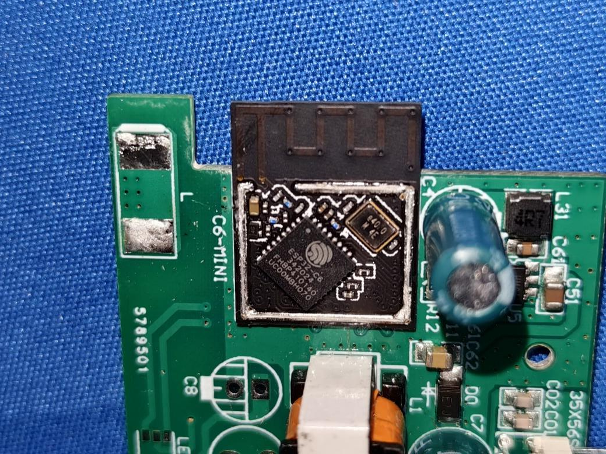

Observe
Use the real app
Inspect settings, device identity, colors, and Light Cycle screens without changing pairing state.
Oasis lights · protocol archaeology
How two beautiful smart lights led us through Matter dead ends, Bluetooth Mesh packets, firmware clues, recovered circadian schedules, and a native Mac controller.

What failed usefully
The C6 silicon could support it, but these devices were provisioned as Oasis BLE Mesh nodes and reported is_matter=false.
A cloud integration might add another control surface, but it would not expose the local protocol or make these nodes native Matter devices.
A terminal OAuth token was rejected by the RainMaker authorizer. We returned to device-local evidence instead of weakening the account boundary.
The first physical breakthrough
The app's native boundary encodes a three-byte vendor access header: opcode plus Oasis company ID 0x02E5. A controlled C3 00 command switched one light off; C3 01 restored it. The same command addressed to the room group controlled both.
C3Power0 or 1C4Brightnesspercent + timeC5WhiteKelvinC6RGBthree channelsCCModecolor or whiteD2White + levelKelvin + percent
Inside the sphere
FCC photos expose an ESP32-C6, separate AC power board, and metal-backed LED board. An independent UART boot log added 8 MB flash, ESP-IDF 5.4.3, signed secure boot, BLE Mesh, RainMaker, and an SM5235E five-channel light driver.
The lesson
We did not crack Oasis by finding one magic packet. We learned enough of its model to build a compatible client while preserving the system people already use.